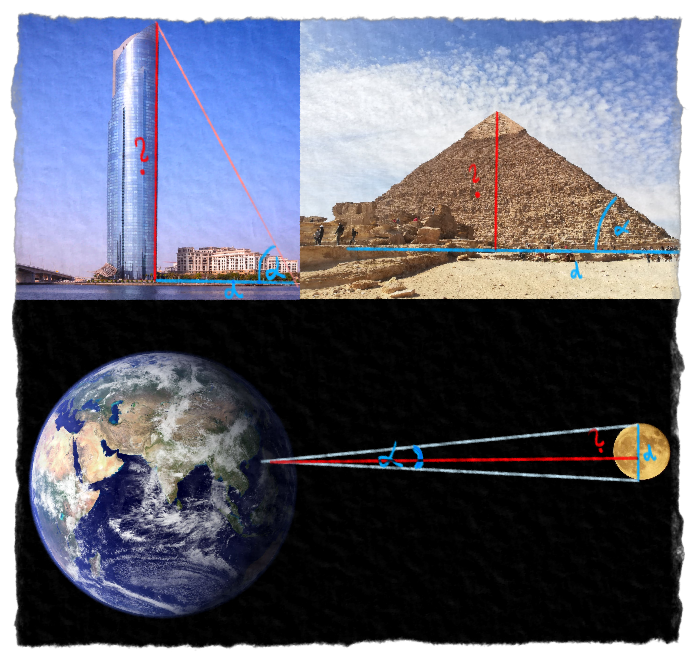
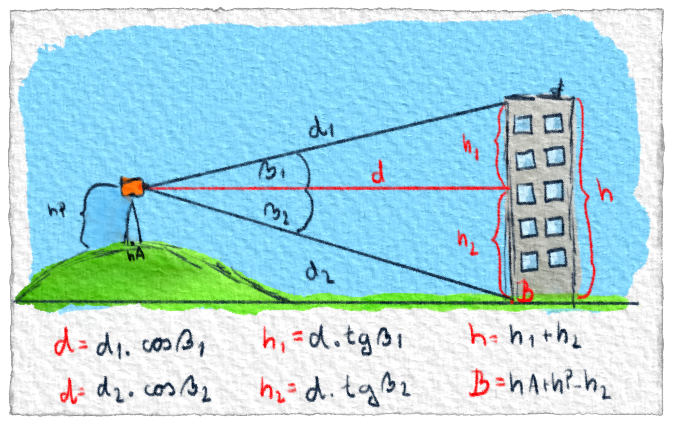
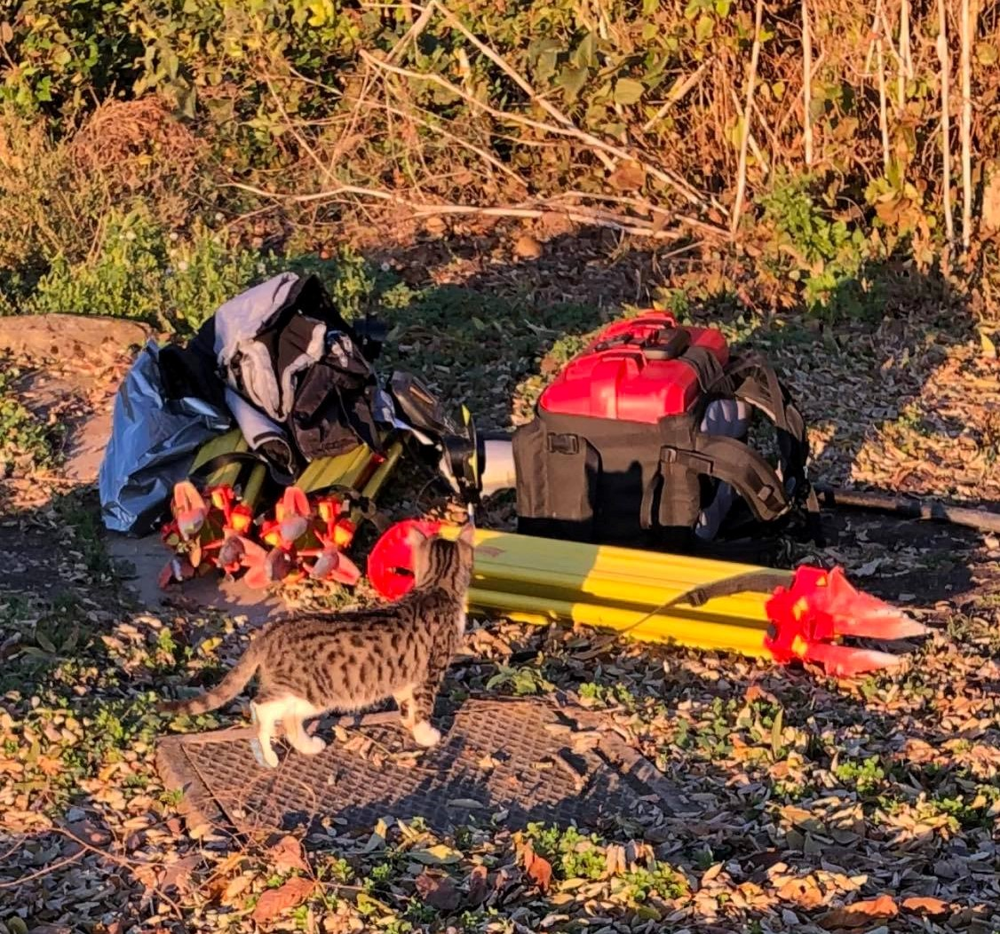

Pýtaš sa prečo staroveké národy mali potrebu vymýšľať takéto hlúposti? Pre nich to zas až také hlúposti neboli. Potrebovali stavať, vymeriavať pozemky, cestovať za obchodom, bavila ich astronómia . So znalosťami z goniometrie všetky tieto veci zvládli. Je pravda, že vtedy sa to ešte nevolalo goniometria a o sínusoch a kosínusoch ani nepočuli. Pre nich to boli ešte stále len pomery strán.
Aj dnes sa s goniometriou stretneš na veľa miestach. Používa sa všade tam, kde potrebujeme odmerať nejakú výšku, vzdialenosť alebo uhol a nemáme k tomu prístup. Namiesto toho odmeriame to, čo môžeme a vďaka goniometrii dorátame to, čo potrebujeme.

Obr. 1 [1].: S goniometriou vieme vypočítať výšku budov. Ako sa to presne robí, to vedia povedať geodeti. Starí Egypťania vedeli vypočítať výšku pyramíd (a vďaka tomu ich postaviť) pomocou pomerov strán - predchodcu goniometrie. Gréci zasa dokázali pomerne presne určiť vzdialenosť mesiaca od Zeme.
O dnešnom praktickom využití goniometrie by ti vedeli povedať aj geodeti. Jedného z nich sme sa na to spýtali.
Ahoj Maťo. Ty si geodet. Môžeš nám prosím povedať, čo geodeti robia?
Jednou vetou sa to dá ťažko zhrnúť. Geodézia dnes zasahuje do mnohých oblastí. Máme geodéziu, ktorá sa zaoberá katastrom, teda kde aký pozemok, či dom leží, komu patrí, či aký je to vôbec druh pozemku. Ďalšou veľkou časťou je inžinierska geodézia. Sem napríklad patrí vytyčovanie inžinierskych sietí (voda, plyn), stavba ciest, železníc, budov a vlastne všetkého, čo je väčšie. Možno veľa ľudí nevie, ale množstvo geodetov pracuje na technológiách ako GPS, či Galileo (európska verzia GPS). Samozrejme sú tu aj oblasti, na ktorých geodézia participuje, napríklad sledovanie posunu kontinentov alebo rôzne zosuvy pôdy.
Sínus, kosínus, tangens, kotangens. Tieto pojmy sú ti určite dobre známe. Čo znamená matematika pre vás geodetov?
Áno, tieto pojmy by mali byť dobre známe každému geodetovi. Matematika je základný stavebný kameň celej geodézie. Matematika nám slúži na výpočet rôznych parametrov, ako výšky alebo dĺžky. Slúži na kontrolu meraní a taktiež sa dá pomocou štatistiky spresniť meranie, tým že viete odhadnúť, s akou chybou ste merali. Nie vždy je to iba o nejakej ťažkej matematike. Ak robíte klasickú niveláciu (nie veľmi presnú - tam už je veľa matematiky), tak vám stačí aj plus a mínus.
Nejaký konkrétny príklad?
Napríklad ak chcete odmerať výšku nejakej budovy, tak máte niekoľko možností. Môžete tipnúť, ako je vysoká, môžete ju odmerať metrom. Tu ale narazíte na problém, že ako. Pri malých domoch stačí aj 20 metrové pásmo a dosť odvahy vyliezť na strechu, a odtiaľ to zmerať. Ale predstavte si, že v New Yourk-u dostanete požiadavku, aby ste zmerali výšku 1 World Trade Center, ktorý má približne 540 metrov. Tu vám nepomôže už ani pásmo. Musíte teda siahnuť po matematike. Práve pomocou goniometrických funkcií si viete vypočítať výšku mrakodrapu.
Načo potrebujeme vedieť výšku budov?
Napríklad, keď sa idú búrať, chceme vedieť, kam až môžu spadnúť.

Obr. 2.: Developer chce zbúrať starú bytovku a nahradiť ju novou. Pri búraní však treba byť opatrný, aby ruiny nezničili okolie. Treba vypočítať, kam má/môže bytovka spadnúť a podľa toho spraviť opatrenia. Geodet vie odmerať vzdialenosti a uhly nakreslené modrou farbou. To, čo je nakreslené červenou, to musí dopočítať.Nejaká milá/vtipná príhoda z geodetickej praxe na záver?
Raz sa mi stalo, že sme zameriavali nový plynovod. Merali sme rovno pred oknami nóbl reštaurácie, takže zvnútra bolo na nás dobre vidieť. Keď som s GPS-kom domeral, tak som ho oprel o stenu a išiel som nad kanál dať preglejku, ktorou bol predtým prekrytý. Ibaže som si nejako nevšimol, že okraj kanála bol bližšie, než som si myslel a tak som doňho zrachotil. Keď som sa z neho škriabal von, z reštaurácie na mňa so zdesením pozeral mladší pár.
Alebo keď sme raz čakali na kolegu, ktorý išiel po auto, tak nám po zbalených prístrojoch začali loziť mačiatka. To bolo také milé spríjemnenie naozaj dlhého dňa.

Obr. 3.: Mačiatko loziace po zbalených prístrojoch